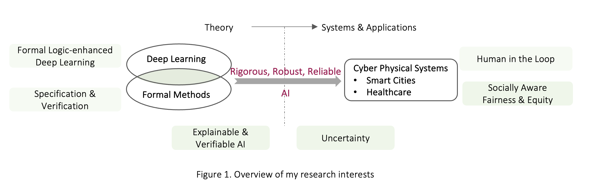

I am an Assistant Professor in the Department of Computer Science and the Institute for Software Integrated Systems at Vanderbilt University. I received my Ph.D. under Professor John A. Stankovic and Professor Lu Feng from the University of Virginia. My research is at the intersection of Machine learning, Formal Methods, and Cyber-Physical Systems. Specifically, I develop rigorous and explainable AI by integrating Formal Methods with Machine Learning, aiming to create AI-powered safe, reliable and trustworhty societal-scale integrated Cyber-Physical Systems, especially in the areas of Smart Cities and Healthcare.

Recent Activities:

Recent News:
- [Award] Aug. 2024. I've received an NSF grant on "CIVIC-PG Track B: Data-Driven Monitoring and Optimizing of Right-of-Way Permits " as a co-PI.
- [Publication] Jul. 2024. Our paper "Enabling MCTS Explainability for Sequential Planning Through Computation Tree Logic" has been accepted for publication at Proceedings of the 27th European Conference on Artificial Intelligence (ECAI).
- [Award] Jul. 2024. I've received an NSF grant on "MOMENTS: An event-based system to support self- regulation during simulation learning" as a co-PI.
- [Award] Jun. 2024. I've received the Best Service Award from the IEEE/ACM international conference on Connected Health: Applications, Systems and Engineering Technologies (CHASE).
- [Award] Jun. 2024. I've received the VUSE Community Impact Research Award.
- [Service] May. 2024. I am serving as the Diversity, Equity and Inclusion Director of ACM SIGBED.
- [Service] May. 2024. I am serving as the Associated Editor for ACM Transactions on Computing for Healthcare.
- [Award] May. 2024. I've received Vanderbilt University Community Collaboration Fund.
- [Award] Apr. 2024. I've received Vanderbilt University Generative AI Seed Grant.
- [Publication] Jan. 2024. Our paper "MicroXercise: A Micro-Level Comparative and Explainable System for Remote Physical Therapy" has been accepted for publication at The IEEE/ACM international conference on Connected Health: Applications, Systems and Engineering Technologies (CHASE).
- [Publication] Jan. 2024. Our paper "Formal Logic Enabled Personalized Federated Learning through Property Inference" has been accepted for publication at Proceedings of the AAAI Conference on Artificial Intelligence (AAAI) as an oral presentation.
- [Publication] Jan. 2024. Our paper "Auto311: A Confidence-Guided Automated System for Non-emergency Calls" has been accepted for publication at Proceedings of the AAAI Conference on Artificial Intelligence (AAAI).
- [More News ... ]